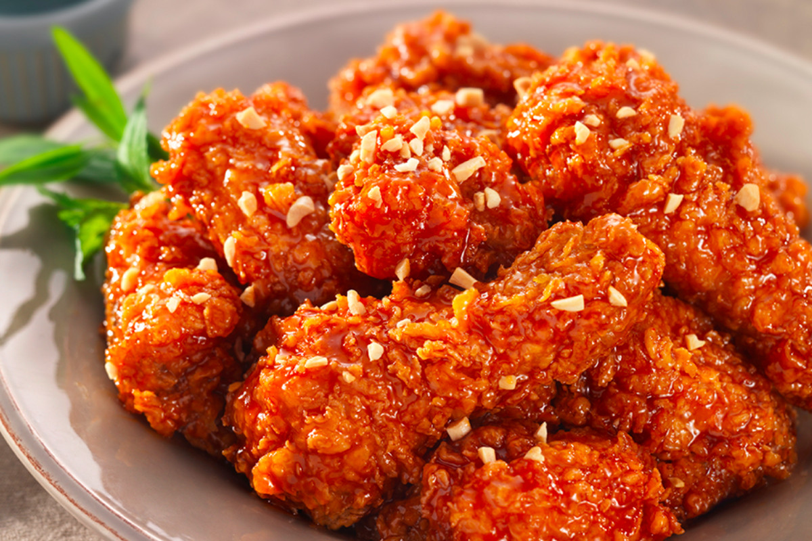

Fried Chicken

Description
Dakgangjeong (닭강정) is a deep-fried crispy chicken dish glazed in a sticky, sweet, and spicy sauce.
This recipe uses bite sized boneless chicken pieces, so it cooks up very fast in shallow oil.
It’s the easiest Korean fried chicken you can make at home!
Ingredients
Chicken:
- Chicken
- bone-in or boneless
- chicken breast, thigh, or wing
Marinade:
- Onion Powder
- Fresh grated ginger or ground ginger
- Baking powder
- Salt and pepper
Coating:
- All purpose flour
- Baking powder
- Cornstarch
Sweet and Spicy Korean Fried Chicken Sauce:
- Aromatics (fresh garlic and fresh ginger)
- Gochujan red chili paste
- Ketchup
- Sweetener (brown sugar and honey)
- Acid (lemon juice or rice wine vinegar)
- Oil (sesame oil, canola, avocado, or vegetable AND asian roasted sesame oil)
Steps
-
Marinate The Chicken:
Pat dry the chicken with paper towels.
In a small mixing bowl, whisk together the salt, pepper, onion powder and baking powder.
Set aside. In a large bowl, toss the chicken with the grated fresh ginger.
Add the baking powder mixture and toss to coat.
Cover and marinate in the refrigerator for 1 hour or overnight.
-
Make the Sauce:
In a small saucepan, heat the oil over medium heat.
Add the garlic and ginger and sauté for about 30 seconds to a minute or until aromatic.
Add the rest of the sauce ingredients and cook over low heat until bubbly.
Remove from the heat. Keep warm.
-
Mix the Coating:
In a shallow bowl, combine the flour and cornstarch and season it with salt and pepper to taste.
Dredge the chicken with the coating mixture.
-
First Fry:
Working in batches to avoid overcrowding, gently drop each piece of chicken into the hot oil.
Cook the chicken until lightly golden, turning occasionally with a metal spider or kitchen tongs.
Remove chicken from the oil and place it on a wire rack set over a sheet pan to drain.
-
Second Fry:
Bring the oil temperature to 375 degrees Fahrenheit.
Carefully, return all the chicken pieces to the oil and cook, stirring the chicken as it cooks until deep golden brown and very crispy.
Remove from the oil and and set on the rack to drain.
-
Sauce it Up:
Transfer the chicken to the reserved sauce and toss until evenly coated.
Serve, garnished with sesame seeds.